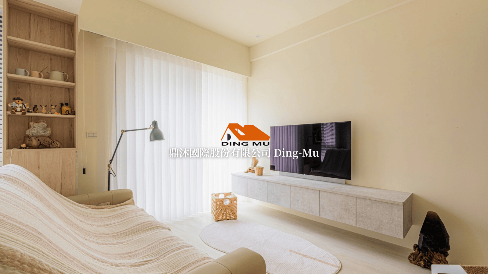
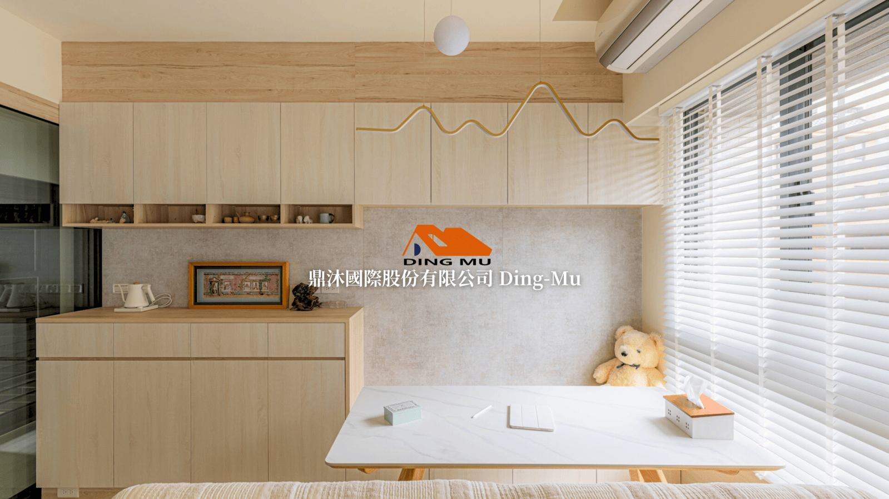
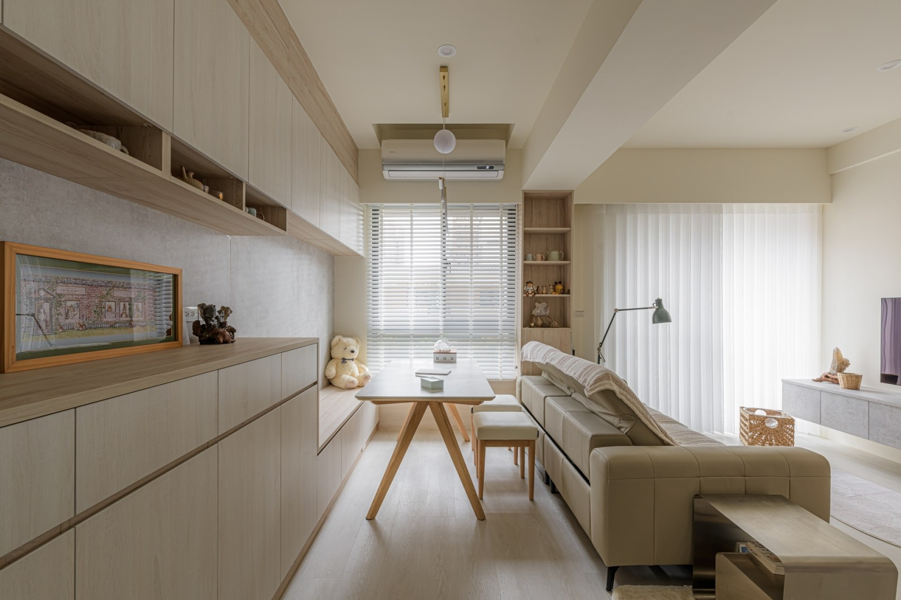
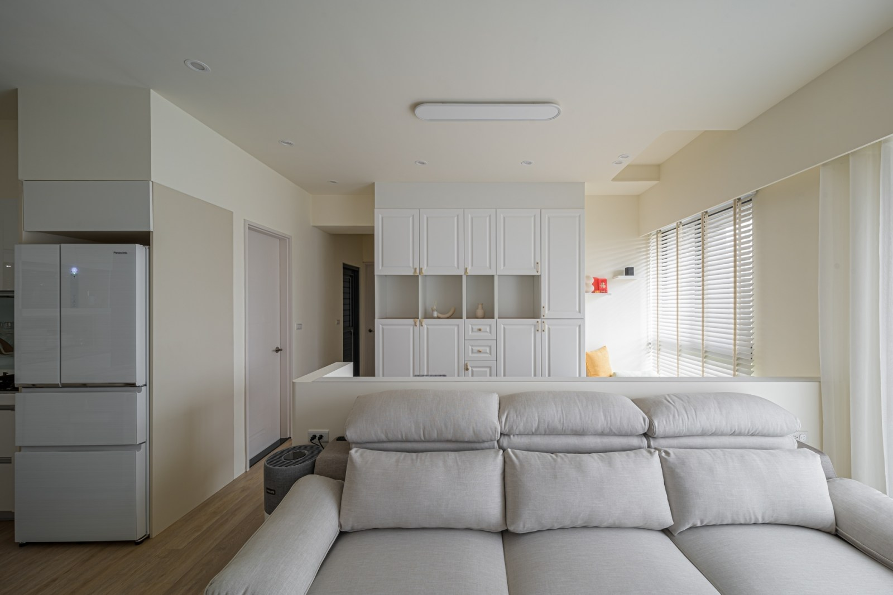
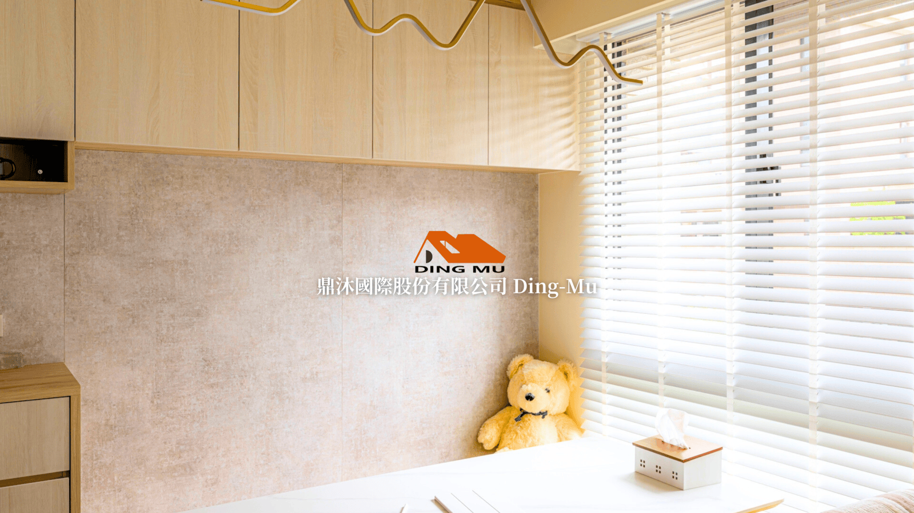

製造與設計有基礎，
數位成交流程仍可補強
2024 年成立，登記主業為木製家具製造。
可見優勢源頭製造、客製系統櫃、設計與工程整合。
公開缺口案例故事、服務流程、FAQ、社群連結與可量測詢價入口。
AI 機會先整理資訊與追蹤，不碰最後的專業判斷。
2024 年成立，最新代表人為陳虹志
- 公司
- 鼎沐國際股份有限公司
- 統編
- 96791277
- 狀態
- 核准設立
- 地址
- 新北市鶯歌區福安街 62 號
- 設立
- 2024-08-01
- 代表人
- 陳虹志
- 資本總額
- NT$28,000,000
- 實收資本
- NT$28,000,000
截至 2026-11-17，成立約 2 年 3 個月。較舊快照列黃郁翰；最新 2026-06-03 核准變更資料已更新為陳虹志。
登記範圍不只系統櫃：
製造、工程、通路與設計
登記項目顯示鼎沐具備「從材料與製造，到設計、工程與通路」的整合可能；實際營收比重與核心能力仍應在拜訪中確認。

源頭製造、客製收納、功能與美感
「空間系統規劃與收納解決方案的源頭製造商」
- 客製系統櫃與空間收納
- 設計團隊與人本設計
- 多色系板材、型號與厚度資訊
- 居住與工作空間的整合訴求
來源：鼎沐官網 About、Color Palette
看得到作品，
但查不到具名主要客戶



沒有公開具名屋主、建商、設計公司或企業客戶，因此本提案不製造「主要客戶名單」。
合理客群：B2C 屋主
與 B2B 設計／工程夥伴
新成屋・翻新・客製收納
重視風格、收納、預算、時程與安裝品質的屋主。
設計師・裝修商・建商
需要源頭製造、材料選擇、工程配合與穩定交付的合作夥伴。
以上是依官網定位、案例型態與登記營業項目的合理推論；不是已公布客戶名單。
LINE 可用；Facebook／Instagram
官網連結尚未完成
「未驗證」不等於不存在；只代表本次從官網與公開頁面無法確認官方帳號。
網站現在像作品牆，
下一步要變成成交工具
現在
品牌介紹
作品圖片
花色資料
聯絡與 ESG
下一步
案例故事＋搜尋入口
丈量到保固的流程
材料／五金 FAQ
可量測的詢價與分流
ESG 內容目前屬公司自述；對外宣傳前應補材料證書、供應商與量化證據。
先整理資訊，再自動追蹤；
保留專業判斷
人做：丈量、設計確認、價格核准、施工與驗收。
第一優先：LINE AI 詢價整理
地點與空間？
粗略尺寸？
喜歡的風格？
預算區間？
期望完工日？
可否上傳照片？
標準需求摘要
- 客戶類型與優先級
- 已知／缺失資訊
- 建議下一步與責任人
- 可安排丈量的前置條件
不自動承諾價格與工期；先把資料收完整，再交給人員確認。
案例內容引擎＋材料知識助理
一組完工資料
照片、空間、需求、材料、挑戰、解法
一套材料資料
花色、厚度、適用空間、保養、常見問答
前提：確認完工照片的公開使用權；材料與性能說法必須有內部資料支持。
報價追蹤與專案進度看板
名單來源、類型、責任人、下次動作
報價版本、修改、核准、追加減
進度逾期、依賴、客戶通知
售後保固、報修、回訪、轉介紹
需先確認現有 Excel／Google Sheet／ERP／會計與權限流程，再決定串接深度。
90 天：先入口，再追蹤，最後串專案
入口與資料
修復社群連結
3 個案例頁
LINE 詢價欄位
簡易名單看板
追蹤與內容
報價版次與提醒
案例內容引擎
材料知識庫
專案與售後
真實案件試跑
驗收與保固流程
KPI 檢討
先用一條真實流程試跑；通過後才擴大，不用一開始就大改系統。
成效要看數字：
從回覆速度到成交與售後
回覆首次回覆時間
完整詢價率
轉換有效名單率
丈量預約率
報價產出時間
追蹤完成率
專案修改次數
逾期項目
內容每月新案例
自然搜尋詢問
售後首次回覆時間
推薦／轉介紹
拜訪時先問：若 90 天只能改善一個指標，鼎沐最在意哪一個？
十個問題，決定真正的導入範圍
- B2C／B2B 比重與最想成長的客群？
- 詢價主要從哪裡來？
- 詢問到驗收的流程與責任人？
- 最常漏追、重工或延誤在哪裡？
- LINE 每月詢問量與缺失資料？
- 報價與進度目前用什麼工具？
- 材料、五金、價格與交期誰維護？
- 完工照片是否有公開授權？
- 售後與保固如何記錄？
- 90 天最想改善哪一個指標？
AI 不替專業人員承諾
價格、施工與 ESG
未丈量與未確認材料，就自動給最終價格
把 AI 示意圖當成可生產的施工圖
沒有證據就宣稱環保、減碳或健康效益
以 AI 保證完工日、品質或成交率
把客戶平面圖與照片上傳到未受控服務
「AI 先做資料整理、客服與追蹤；設計、丈量、報價核准與施工，仍由專業人員負責。」
資料來源與證據標記
操作說明
上一頁／下一頁點下方按鈕；手機也可左右滑動。
女聲講解按「講解」播放或暫停當頁自然女聲。
列表展開全部章節，直接跳到指定頁面。
逐字稿查看當頁完整講解文字。
鍵盤使用左右方向鍵切換頁面，Esc 關閉面板。